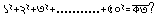
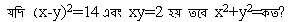

1. Identify the imparative sentence.
I shall go to college.
Motin is singing a song.
Stand up.
It has been raining since morning.
2. Fill in the gaps with the suitable word:To stay healthy we must have a balanced-
diet
food
drink
nvironment
3. Choose the correct alternative and marks its letter on your answer sheet. The rich should not look down- the poor.
at
for
towards
upon
4. I took a map with me,as I didn’t want to ………… my way on the journey. on the journey.
loose
lose
lost
loss
5. Every driver must be held……………….. his own actions
responsible for
responsible to
liable to
blamed for
6. Through thick and thin’means
under all conditions
to make thick and thin
not clear in understanding
of greate density
7. ’Prior to’means
After
Before
Immediately
During the period of
8. Nobody knocked him down; it was an
Incident
Occurrence
Accident
Event
9. 
৩৫৭২৫
৪২৯২৫
৪৫৫০০
৪৭২২৫
10. ৪ টাকায় ৫টি করে কিনে ৫ টাকায় ৪ টি করে বিকয় করলে শতকরা কত লাভ হবে?
৪৫%
৪৮.৫০%
৫২.৭৫%
৫৬.২৫%
11. এক ব্যবসায়ী একটি পন্যের মুল ২৫% বাড়ালো,অত:পর বর্ধিত মুল্য থেকে ২৫% কমালো।সর্বশেষ মুল্য সর্বপ্রথম মুল্যের তুলনায়-
৫%কমানো হয়েছে
৬.২৫%কমানো হয়েছে
৫%বাড়ানো হয়েছে
৬.২৫% বাড়ানো হয়েছে
12. যদি একটি কাজ ৯ জন লোক ১২ দিনে করতে পারে,অতিরিক্ত ৩ জন লোক নিয়োগ করলে কাজটি কতদিনে শেষ হবে?
৭
৯
১০
১২
13. শিক্ষা সফরে যাওয়ার জন্য ২৪০০ টাকায় বাস ভাড়া করা হলো এবং প্রতেক ছাএ/ছাএী সমান ভাড়া বহন করবে ঠিক হলো ।অতিরিক্ত ১০ জন ছাএ/ছাএী যাওয়ায় প্রতি জনের ভাড়া ৮ টাকা কমে গেল।বাসে কত জন ছাএ/ছাএী গিয়েছিল?
৪০
৪৮
৫০
৬০
14. পিতা, মাতা ও পুত্রের বয়সের গড় ৩৭ বছর । আবার পিতা ও পুত্রের বয়সের গড় ৩৫ বছর। মাতার বয়স কত?
৩৮ বছর
৪১ বছর
৪৫ বছর
৪৮ বছর
15. 
12
14
16
18
16. বৃত্তের ব্যাস তিনগুন বৃদ্ধি করলে ক্ষেএফল কতগুন বৃদ্ধি পাবে?
৪
৯
১২
১৬
17. একটি সমদ্বিবাহু সমকোনী ত্রিভুজের অতিভুজের দৈঘ্য ১২ সেমি হলে ত্রিভুজের ক্ষেএফল কত বর্গ সেমি?
৩৬
৪৮
৫৬
৭২
18. ৬০ থেকে ৮০ এর মধ্যবর্তী বৃহত্তম ও ক্ষুদ্রতম মৌলিক সংখ্যার অন্তর হবে
৮
১২
১৮
১৪০
19. NIPORT কি?
জনসংখ্যা বিষয়ক গবেষনা প্রতিষ্ঠান
পোলট্রীফার্ম বিষয়ক গবেষনা প্রতিষ্ঠান
নদী বন্দর বিষয়ক গবেষনা প্রতিষ্ঠান
বন্দর বিষয়ক গবেষনা প্রতিষ্ঠান
20. সংবিধানের কোন অনুচ্ছেদে “রাষ্ট্র ও গনজীবনের সর্বস্তরে নারী পুরুষের সমান অধিকার লাভ করবেন” বলা আছে?
১০ নং অনুচ্ছেদে
২১(২) নং অনুচ্ছেদে
২৭ নং অনুচ্ছেদে
২৮(২) নং অনুচ্ছেদে
21. UNDP রিপোর্ট সেপ্টেম্বর ২০০৫ সাল মোতাবেক বাংলাদেশের মাথাপিচু আয় কত?
৪৪৪ ডলার
৭৭০ ডলার
১০৭০ ডলার
১৭৭০ ডলার
22. স্বাধীনতা যুদ্ধে অবদানের জন্য “বীরপ্রতীক” উপধি লাভ করে কতজন?
৭ জন
৬৮ জন
১৭৫ জন
৪২৬ জন
23. বাংলাদেশের ইক্ষু গবেষনা ইনস্টিটিউট কোথায় অবস্থিত?
দিনাজপুর
গোপালপুর
পাকশী
ইশ্বরদী
24. মিলেনিয়াম ডেভলপমেন্ট গোল অর্জন করার কথা কোন সময়ে?
২০১০
২০১৫
২০২০
২০২৫
25. রাজারবাগ পুলিশ লাইনে “দুর্জয়” ভাস্কর্যটির শিল্পী কে?
হামিদুর রহমান
মৃনাল হক
শামিম শিকদার
নোভেরা আহমেদ
26. চট্টগ্রাম- কক্সবাজার সাবমেরিন কেবলস অপটিকাল ফাইবার স্থাপন করার জন্য বাংলাদেশ সরকারকে কত দূরত্বের ব্যয় বহন করতে হবে?
৭০০ কি.মি
৫৭০ কি.মি
৩০০ কি.মি
১৭০ কি.মি
27. রাজেন্দ্রপুর সেনানিবাসে অবস্থিত মুক্তিযুদ্ধের স্মৃতিস্তম্ভের নাম কি?
বিজয় স্তম্ভ
বিজয়কেতন
স্বাধীনতা সোপান
রক্ত সোপান
28. বাংলাদেশের পোষ্টাল একাডেমি কোথায় অবস্থিত?
রাজশাহী
ঢাকা
চট্টগ্রাম
খুলনা
29. প্রস্তাবিত পদ্মা সেতুর দৈর্ঘ কত কি.মি?
৫.০৩
৬.০৩
৪.৮
৫.৫৮
30. বাংলাদেশে সর্বপ্রথম কোন মহিলা টেস্ট টিউব শিশুর মা হন?
পারভীন ফাতেমা
ফিরোজা বেগম
রওশন জাহান
কানিজ ফাতেমা
31. বাংলাদেশ জাতিসংঘের কততম সদস্য?
১৩৬ তম
১৩৭ তম
১৩৮ তম
১৩৯ তম
32. কেন্দ্রীয় শহীদ মিনারের স্থপতি কে?
তানবির কবির
হামিদুর রহমান
হামিদুজ্জামান
অস্কার বাদল
33. জাতিসংঘ সাধারন পরিষদের প্রথম বাংলাদেশী সভাপতি কে?
বি.এ সিদ্দিকী
খাজা ওয়াসিউদ্দিন
হুমায়ন রশিদ চৌধুরী
শমসের মবিন চৌধুরী
34. স্বাধীনতা যুদ্ধে অবদান রাখার জন্য কতজন মহিলাকে বীর প্রতীক উপধিতে ভূষিত করা হয়?
৫ জন
৭ জন
২ জন
৬ জন
35. কর্মসংস্থান ব্যাংক প্রতিষ্ঠিত হয় কোন সনে?
১৯৯৫
১৯৯৬
১৯৯৮
২০০১
36. লোকসংখ্যার দিক থেকে বাংলাদেশ বিশ্বের কততম স্থানে?
৫ম
৮ম
৯ম
১০ম
37. সেন্ট মার্টিন দ্বীপের আয়তন কত বর্গ কিলোমিটার?
৮
১০
১২
১৪
38. বাংলদেশে পরমানু শক্তি কমিশন গঠিত হয় কত সনে?
১৯৭২
১৯৭৫
১৯৭৩
১৯৯৭
39. কোন ইঞ্জিনে কার্বুরেটর থাকে?
পেট্রোল ইঞ্জিনে
ডিজেল ইঞ্জিনে
রকেট ইঞ্জিনে
বিমান ইঞ্জিনে
40. সর্বাপেক্ষা ছোট তরঙ্গ দৈর্ঘের বিকিরন হচ্ছে-
আলফা রশ্মি
বিটা রশ্মি
গামা রশ্মি
রঞ্জন রশ্মি
41. মানুষের হৃৎপিন্ডে কতটি প্রকোষ্ঠ থাকে?
দুটি
চারটি
ছয়টি
আটটি
42. প্রেসার কুকারে রান্না তাড়াতাড়ি হয়, কারন-
রান্নার জন্য শুধু তাপ নয় চাপও কাজে লাগে
বন্ধ পাত্রে তাপ সংরক্ষিত হয়
উচ্চ চাপে তরলের স্ফুটনাংক বৃদ্ধি পায়
সঞ্চিত বাষ্পের তাপ রান্নার সহায়ক
43. বিলিরুবিন তৈরি হয়-
পিওথলিতে
কিডনীতে
প্লীহায়
যকৃতে
44. মানুষের গায়ের রং কোন উপাদানের উপাদানের উপর নির্ভর করে?
মেলানিন
থায়ামিন
ক্যলোরিন
হিমোগ্লোবিন
45. বাদুর অন্ধকারে চলাফেরা করে কিভাবে?
তীক্ষ্ দৃষ্টি সম্পন্ন চোখের সাহায্যে
ক্রমাগত শব্দ উৎপন্নের মাধ্যমে অবস্থান নির্নয় করে
সৃষ্ট শব্দের প্রতিধ্ধনি শুনে
অলৌকিক ভাবে
46. গাছের খাদ্য তালিকায় আছে
N-P-K-S ও Zn
Na-P-K-S ও Zn
N-B-K-S ও A1
N-P-K-S ও A1
47. নিচের কোনটি DNA এর নাইট্রোজেন বেস?
ইউরাসিল
গোয়ানিন
পিরিডক্সিন
এ্যাসপারাজিন
48. নিচের কোনটি পরমানুর নিউক্লিয়াসে থাকেনা?
Meson
Neutron
Proton
Electron
49. ২০০৫ সালে যুক্তরাষ্ট্রের দক্ষিন বা দক্ষিন পশ্চিম অঞ্চলে সর্বপ্রথম কোন হারিকেনটি আঘাত হানে?
ডেনিস
ক্যাটারিনা
আইভান
রিটা
50. কোন দেশটি স্ক্যানডিনেভিয়ার অন্তভুক্ত নয়?
ডেনমার্ক
ফিনল্যান্ড
নেদারল্যান্ড
যুক্তরাষ্ট্র
51. মুসলমান প্রধান না হয়েও কোন দেশটি ইসলামী সম্মেলন সংস্থার সদস্য?
নাইজেরিয়া
লেবানন
নাইজারনুমো
উগান্ডা
52. কিউবায় ক্ষেপনাস্ত্র সঙ্কটের সময় যুক্তরাষ্টের প্রেসিডেন্ট কে ছিলেন?
রিজার্ড এম নিক্সন
জন এফ কেনেডি
লিন্ডন বেইনস জনসন
হ্যারি এস ট্রুম্যান
53. মার্কিন যুক্তরাষ্টের কোন প্রেসিডেন্ট ১২ বছর ক্ষমতায় অধিষ্ঠিত ছিলেন?
হ্যারি এস ট্রুম্যান
ফ্রাঙ্কলিন রুজভেল্ট
জেমস মনরো
তথ্যটি সঠিক নয়
54. ভারতীয় লোকসভায় নির্বাচিত সদস্য সংখ্যা কত?
৫৪৩
৫৪৫
৪১৫
৫৪০
55. কোন দেশের মহিলারা সর্বপ্রথম ভোটাধিকার লাভ করে?
মার্কিন যুক্তরাষ্ট্র
নিউজিল্যান্ড
বাহামা
সুইজারল্যান্ড
56. Chemical Weapons Convention কোন সালে সাক্ষরিত হয়?
১৯৯০
১৯৯৬
১৯৯৩
১৯৯৯
57. কোন পরিষদের সুপারিশক্রমে জাতিসংঘে নতুন সদস্য গ্রহন করা হয়?
অছি পরিষদ
সাধারন পরিষদ
নিরাপত্তা পরিষদ
অর্থনৈতিক ও সামাজিক পরিষদ
58. কোন মুসলিম মনিষী সর্বপ্রথম নোবেল পুরস্কার পান?
ইয়াসির আরাফাত
নাগীব মাহফুজ
আনোয়ার সাদাত
প্রফেসর আব্দুস সালাম
59. বাদশা ফাহাদের পর সৌদি বাদশা কে হন?
খালেদ
আবদুল্লাহ
ফয়সাল
আব্দুল আজিজ
60. অক্সফাম(Oxfam)এর সদর দপ্তর কোথায়?
নিউইয়র্ক
ক্যামেনিক্স
লন্ডন
হেগ
61. কোনটি বিংশ শতাব্দীর শেষভাগে উপনিবেশবাদের নিগড় থেকে মুক্ত হয়?
হংকং
শ্রীলংকা
ম্যাকাউ
বাংলাদেশ
62. নিচের কোন চুক্তিটি যুক্তরাষ্ট্রির সিনেটে অনুমোদিত হয়নি?
এবিএম চুক্তি(ABM)
সল্ট-১ চুক্তি(SALT-1)
সল্ট-২ চুক্তি(SALT-2)
ষ্টার্ট-১ চুক্তি(START-1)
63. Amnesty International কত সালে নোবেল শান্তি পুরস্কার পেয়েছিল?
১৯৭৭
১৯৭৮
১৯৭৯
১৯৮১
64. START-2 কি?
টিভিতে সম্প্রসারিত একটি সিরিয়াল
বানিজ্য সংক্রান্ত একটি চুক্তি
কৌশলগত অস্ত্র হ্রাস সংক্রান্ত চুক্তি
এর কোনটিই নয়
65. আশিয়ান রিজিওনাল ফোরাম (ARF) এর সদস্য সংখ্যা কত?
২১
২২
২৩
২৬
66. মালয়েশিয়ার সাবেক প্রধানমন্ত্রী ড: মাহাথির মোহাম্মদ কত বছর ক্ষমতায় ছিলেন?
২১ বছর
২২ বছর
২৪ বছর
২৬ বছর
67. বাংলাদেশ কত সালে ইসলামী সম্মেলন সংস্থার সদস্যপদ লাভ করে?
১৯৭৪ সালে
১৯৭৫ সালে
১৯৭৩ সালে
১৯৭৬ সালে
68. ইরাকের বর্তমান প্রেসিডেন্ট জালাল তালাবানি কোন সম্প্রদায়ের?
সুন্নি
সিয়া
কুর্দি
খিষ্টান
69. কোনটি উপন্যাস?
নতুন চাঁদ
কন্যা কুমারী
গড্ডালিকা
নেমেসিস
70. লৌকিক কাহিনীর প্রখম রচয়িতা কে?
আলাওল
কোরেশী মগন
দৌলত কাজী
সৈয়দ সুলতান
71. সাপ্তাহিক ‘সুধাকর’ এর সম্পাদক কে?
মুন্সি মোহাম্মদ রিয়াজ উদ্দিন আহম্মদ
মুন্সি মোহাম্মদ মেহের উল্লা
শেখ আবদুর রহিম
ইসমাইল হোসেন সিরাজি
72. মাসিক মোহাম্মদী কোন সালে প্রকাশিত হয়?
১৯২৬
১৯২৭
১৯২৮
১৯২৯
73. কোন পত্রিকাটি ১৯২৩ সালে প্রকাশিত হয়?
কালিকলম
প্রগতি
কল্লোল
সবুজপত্র
74. ঢাকা থেকে প্রকাশিত হয় কোন পত্রিকাটি?
অরনি
পরিচয়
নবশক্তি
ক্রান্তি
75. গ্রীক শব্দ কোনটি?
তুফান
লুঙ্গি
কুশন
দাম
76. বাংলা ভাষায় কয়টি খাঁটি উপসর্গ রয়েছে?
উনিশ
কুড়ি
একুশ
বাইশ
77. শিশুরাজ্যে এই মেয়েটি একটি ছোট খাট বর্গির উপদ্রব বলিলেই হয়।রবীন্দ্রনাথ ঠাকুরের কোন গল্পের সংলাপ?
একরাত্রি
শুভা
সমাপ্তি
সংলাপ
78. বাংলা সাহিত্যর প্রথম ইতিহাস গ্রন্থ কোনটি?
বাঙলা সাহিত্যের ইতিহাস
বঙ্গভাষা ও সাহিত্য
বাংলা সাহিত্যের কথা
বাংলা সাহিত্যের রূপকথা
79. কত খ্রিষ্ট্রাব্দে শরৎচন্দ্র চট্টোপাধ্যায় কলকাতা বিশ্ববিদ্যালয়ের ‘জগত্তারিনী’ পদক লাভ করে?
১৯১৬
১৯২৩
১৯৩৩
১৯০৩
80. রাজা রামমোহন রচিত বাংলা ব্যাকরনের নাম কি?
মাগধীয় ব্যাকরন
গৌড়িয় ব্যাকরন
মাতৃভাষা ব্যাকরন
ভাষা ও ব্যাকরন
81. মেছো’ শব্দের প্রকৃতি ও প্রত্যয় কি?
মাছ+ও
মেছ+ও
মাছি+উয়া(ও)
মাছ+উয়া(ও)
82. কোন সন্ধিটি নিপাতনে সিদ্ধ?
বাক+দান=বাগদান
উত+ছেদ=উদচ্ছেদ
পর+পর=পরস্পর
সম+সার=সংসার
83. বাংলা মৌলিক নাটকের যাত্রা শুরু হয় কোন নাট্যকারের হাতে?
মধুসুদন দও
দীন বন্ধু মিএ
জোতিন্দ্রনাথ ঠাকুর
রামনারায়ন তর্করত্ন
84. প্রত্যক্ষ কোন বস্তুর সাথে পরোক্ষ কোন বস্তুর তুলনা করলে প্রত্যক্ষ বস্তুটিকে বলা হয়.............
উপমিত
উপমান
উপমেয়
রূপক
85. পাখি সব করে রব রাতি পোহাইল’ পংক্তর রচয়িতা................?
রাম নারায়ন তর্করত্ন
বিহারী লাল
কৃষ্ঞচন্দ্র মজুমদার
মদনমোহন তর্কালংকার
86. আমি কিংবদান্তির কথা বলছি’-এর রচয়িতা কে?
সিকান্দার আবু জাফর
আবু জাফর ওবায়দুল্লাহ
ফররুখ আহম্মদ
আহসান হাবীব
87. জীবনে জ্যাঠামি ও সাহিত্যে ন্যাকামি’ সহ্য করতে পারতেন না..........।
বঙ্কিমচন্দ্র
সৈয়দ মুজতবা আলি
প্রমথ চৌধুরী
প্রমথনাথবিশী
88. এ মাটি সোনার বাড়া’এ উদ্ধিতিতে সোনা কোন অর্থে ব্যবহার করা হয়েছে?
বিশেষনের অতিশায়ন
রূপবাচক বিশেষন
উপাদান বাচক বিশেষন
বিধেয় বিশেষন
89. What would have happened if.........?
The bridge is broken
The bridge would break
The bridge had broken
The bridge has been broken
90. Explain the meaning of-`Bring to pass`
Cause of destroy
Cause to happen
Cause to carry out
Cause to convince
91. which of the flowing sentences is the correct one?
Paper is made of wood
Paper is made by wood
Paper is made from wood
Paper is made on wood
92. The word 'bounty' is closest in meaning to
Generosity
Familiar
Dividing line
Sympathy
93. Give the correct Passive form of-My teacher embodies all the good qualities.
All the good qualities are embodied on my teacher
All the good qualities are embodied by my teacher
All the good qualities are embodied in my teacher
All the good qualities are embodied to my teacher
94. choose the correct indirect speech- She asked me “Are you happy in your new job?”
She asked me if I was happy in my new job
She asked me if I have been happy in my new job
She asked me whether I am happy in my new job
She asked me if I had been happy in my new job
95. The meaning of the word `obese`is-
Very fat
Ugly
Tardy
Obnoxious
96. A person who writes about his own life writes-
A diary
A biography
An autobiography
A chronicle
97. which of the flowing sentences is correct?
Why have you done this?
Why you had done this?
Why you have done this?
Why did you done this?
98. what will be correct preposition to complete the sentences?“I am not good.........translation.”
In
About
With
At
99. which is the noun of the word `beautiful`?
Beauty
Beautify
Beauteous
100. fill in the blank with the appropriate preposition: We have to go...... five minutes.
In
Beautifully
On
By